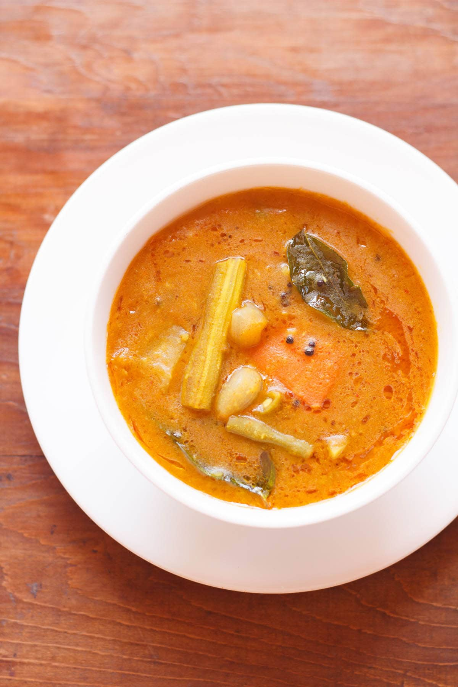
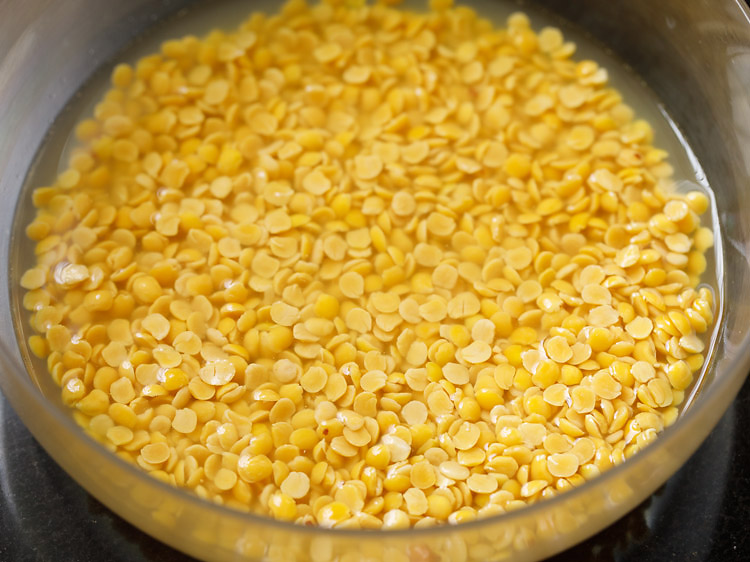
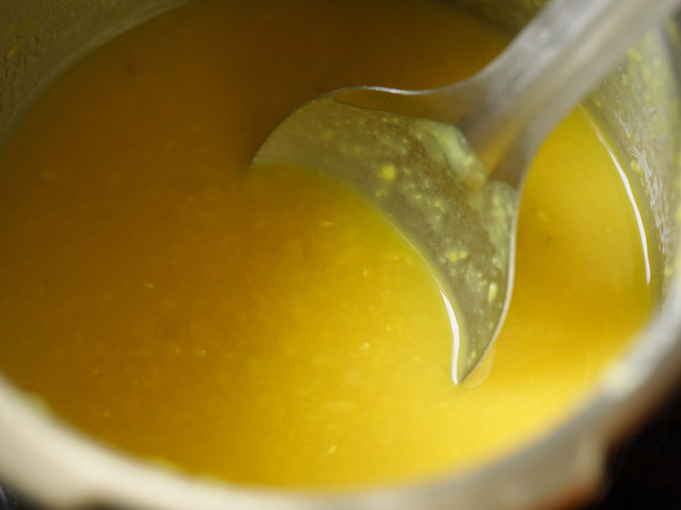
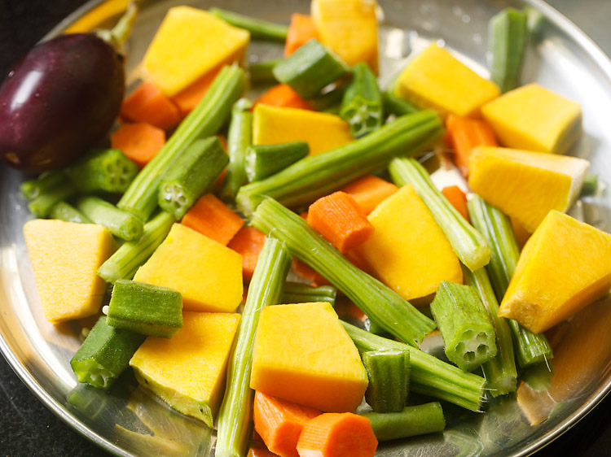
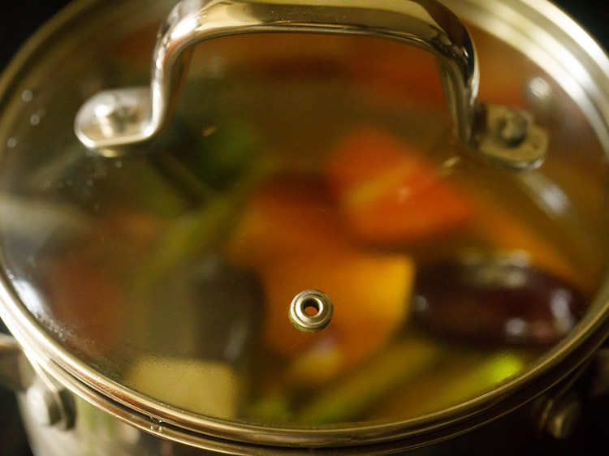
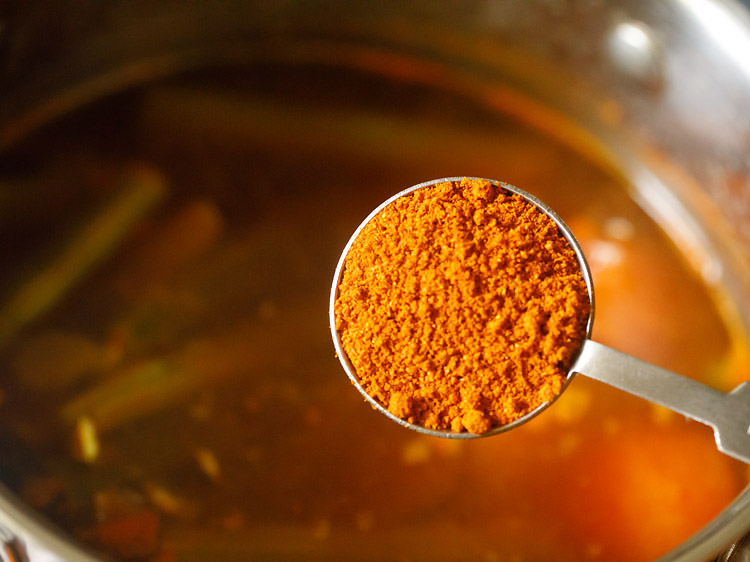

1. Before we begin making sambar, it always helps to soak tamarind in water earlier. So soak 1 tablespoon tamarind in ⅓ cup hot water for 20 to 30 minutes.

2. Once the tamarind gets soft, then squeeze the tamarind in the water itself. Discard the strained tamarind and keep the tamarind pulp aside.
3. Rinse ½ cup tuvar dal (100 grams) a couple of times in fresh and clean water. You can use a strainer to rinse the lentils. For quick cooking of the lentils you can opt to soak them for an hour prior to cooking. I recommend to make your sambar recipe with unpolished tuvar dal for a really good taste and more nutrition

4. Drain all the water and add the dal in a 2 litre stovetop pressure cooker. Also add ¼ teaspoon turmeric powder. Note: You can also cook the lentils in a pan or instant pot. Add water as needed while cooking the lentils.
5. Add 1.5 to 1.75 cups of water and mix to combine
6. Cover and pressure cook dal for 7 to 8 whistles or 9 to 10 minutes on medium heat

6. Cover and pressure cook dal for 7 to 8 whistles or 9 to 10 minutes on medium heat
8. When the dal is pressure cooking – rinse, peel and chop the vegetables. When making sambar, chop the vegetables which get cooked faster in large sizes like pumpkin, brinjals (small aubergines) okra, drumsticks etc. Vegetables which take more time to cook are to be chopped in small sizes like carrots, potatoes, etc. I have chopped the pumpkin in large cubes and the carrots and potatoes in small cubes. Chop the brinjals before you add them in the pan or else they darken. You will need 1 to 1.5 cup of chopped vegetables. Note: For best taste and health reasons, I always make sambar with fresh vegetables. However you can use frozen vegetables also.

9. Take 1 to 1.5 cups chopped vegetables in a pan or pot. Also add 6 to 7 pearl onions or 1 small to medium onion (thickly sliced) and 1 small to medium tomato (quartered).
10. Sprinkle ¼ teaspoon turmeric powder, ¼ teaspoon kashmiri red chilli powder and salt as per taste. Adding kashmiri red chili powder is optional and can be skipped. I add it for a nice bright color in the sambar.
11. Add 1.5 to 2 cups water and stir. Add enough water so that they cover the vegetables

12. Keep the pan on a stove top and begin to cook vegetables on a medium-low to medium heat. In between do check when the vegetables are cooking.
13. Cook till the vegetables are almost done. Ensure that you don’t overcook the vegetables.

14. Add the prepared tamarind pulp to the cooked vegetables. If you don’t have dried tamarind then use packaged or bottled tamarind paste. You can add about ½ to 1 tablespoon of the tamarind paste or add as according to your taste.
15. Mix well.
16. Next add 1 to 1.5 tablespoons Sambar Powder. At this step you can also add ½ to 1 teaspoon of jaggery powder. Adding jaggery is optional. The flavor of your sambar mostly depends upon the sambar powder that you will be using. So either make your own homemade sambar powder or use a trusted brand. You can buy packaged sambar powder easily online.

17. Stir and mix well again.
18. Add the mashed dal.
19. Stir and mix very well. If the consistency looks very thick, you can add some water. You can easily adjust the quantity of water and make medium to thin consistency of sambar. But keep in mind not to add too much of water as this will dilute the flavors.
20. Simmer on a medium-low heat till it comes to a boil. Stir at intervals. You will see a frothy layer on top when the sambar begins boiling. At this step switch off the heat. Cover and keep aside. Check the taste and add salt if needed.
21. In a small pan or tadka pan, heat 2 tablespoons gingelly oil (oil made from raw sesame seeds). You can even use sunflower oil, ghee or coconut oil instead. Add ½ teaspoon mustard seeds.
22. Let the mustard seeds crackle on low heat.
23. Then add 1 to 2 dry red chillies (halved and seeds removed)
24. Immediately add 10 to 12 curry leaves, 5 to 6 fenugreek seeds (methi seeds) and 2 pinches of asafoetida (hing). Be careful while adding curry leaves as the oil splutters a lot. Note: To make sambar gluten-free, omit the asafetida and ensure that your sambar powder does not have asafetida or use gluten-free asafetida.

25. Fry them till the red chilies change color and curry leaves become crisp on low heat. Take care that you don’t burn the spices.
26. Immediately add this tempering mixture in the hot sambar.
27. Cover the pan with its lid for 4 to 5 minutes, so that the aroma and flavors from the tempering mixture get infused with the sambar

28. Serve sambar hot or warm. Garnish with some coriander leaves if you prefer. Usually, it is is cooked a two-three hours earlier as its taste becomes better with time. However, we prefer sambar to be served as soon as it is made. It can also be served with steamed rice, idli, dosa, medu vada or uttapam.